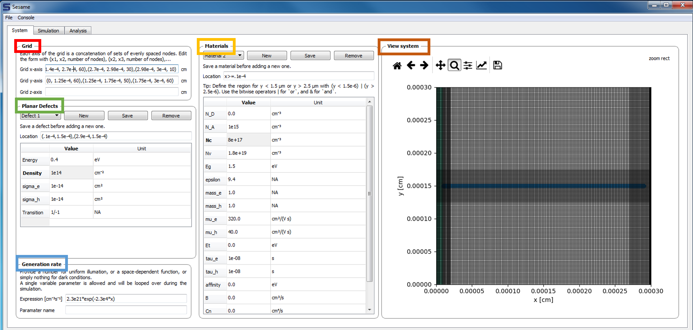

4.1. System Tab¶
The first step in performing simulations with the GUI is defining the system. The layout of the system tab is shown below:
Grid: The upper left frame contains inputs for the user-defined grid. The dimensionality of the system is inferred from the grid entries: entering a grid for the x-axis only implies a 1-d system. Adding a grid for the y-axis implies a 2-d system, etc.
Materials:
The middle frame contains the entries for the bulk material properties. Multiple materials can be added to the system. Their location is specified in the Location field.
View system: Provides a depiction of the system geometry, including the x and y meshes, different materials regions, and the planar defects (grain boundaries).
Planar Defects: Planar defects are added in the middle-left frame. For a 1-d system, a planar defect location is specified by 1 point. For a 2-d system, a planar defect is specified by 2 points. The energy level of the defect (with respect to the intrinsic energy level), the defect density, capture cross sections, and charge states are specified here.
Generation Rate:
The carrier generation rate density is entered in the lower-left frame. There is an option to vary 1 parameter in this profile. In cases where the generation profile changes, the parameter which is varied must be specified in the field parameter name. If the generation profile does not change, this field may be left blank.